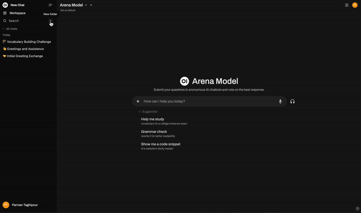
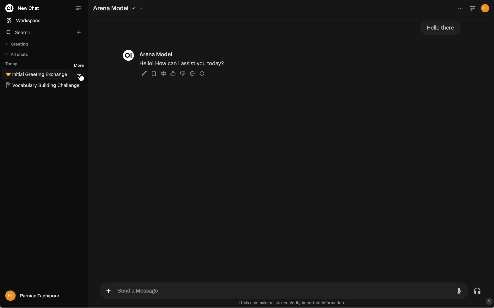

🗂️ Organização de conversas
O Nullcore fornece recursos poderosos da organização que ajudam os usuários a gerenciar suas conversas. Você pode categorizar e marcar facilmente conversas, facilitando e recuperá -las e recuperá -las mais tarde. As duas principais maneiras de organizar conversas são atravésPastaseTags
Pastas: da organização simples a projetos poderosos
As pastas em Webui aberto evoluíram de recipientes simples para espaços de trabalho poderosos e semelhantes a projetos. Eles permitem que você não apenas agrupe conversas relacionadas, mas também para definir contextos, instruções e bases de conhecimento específicas para essas conversas.
Operações básicas de pasta
Na essência deles, as pastas ainda permitem que você mantenha sua lista de bate -papo arrumada:
- Criando uma pasta: Você pode criar uma nova pasta para armazenar conversas específicas. Isso é útil se você deseja manter as conversas de um tópico ou propósito semelhante juntos.
- Movendo conversas para pastas: As conversas existentes podem ser movidas para as pastas arrastando e soltando -as. Isso permite estruturar seu espaço de trabalho de uma maneira que se adapte ao seu fluxo de trabalho.

Iniciando um bate -papo em uma pasta
Simplesmente clicando em uma pasta na barra lateral, você seleciona a pasta como seu espaço para iniciar um bate -papo. A interface de bate -papo principal será atualizada para mostrar que você selecionou essa pasta e qualquer novo bate -papo que você iniciar será criado automaticamente dentro desta pasta, herdando suas configurações exclusivas.
Configurações da pasta de edição: avisos e conhecimento do sistema
Você pode dar a cada pasta uma personalidade e contexto únicos. Passando sobre uma pasta, clicando no menu de três pontos e selecionando"Editar", você abrirá as configurações da pasta pop -up. Aqui, você pode configurar:
- Nome da pasta: Altere o nome da sua pasta para refletir melhor seu objetivo.
- Prompt de sistema: Opcionalmente, atribua um prompt de sistema dedicado à pasta. Este prompt é automaticamente prévio para todas as novas conversas e mensagens criadas nessa pasta, adaptando o comportamento da IA para tarefas específicas. Você ainda pode usar pastas para organização sem um prompt do sistema.
- Conhecimento anexado: Vincular uma ou mais bases de conhecimento à sua pasta. Quaisquer arquivos aqui anexados serão incluídos automaticamente como contexto em todos os novos bate -papos nessa pasta do projeto. Isso também é opcional; Você ainda pode usar pastas para organização, sem anexar bases de conhecimento extras.
Exemplo de uso de uso
Imagine que você está trabalhando em um projeto Python. Você pode criar uma pasta chamada "Python Expert".
- Edite a pastae defina o sistema de sistema para algo como:
You are an expert Python developer. You provide clean, efficient, and well-documented code. When asked for code, you prioritize clarity and adherence to PEP 8 standards. - Anexe conhecimentoAo vincular uma base de conhecimento que contém um PDF da especificação técnica do seu projeto ou a documentação de uma biblioteca específica.
- Ative/selecione a pastaclicando nele.
- Agora, qualquer novo bate -papo que você inicia terá automaticamente essa persona especializada, o contexto de seus documentos e é salva na pasta, garantindo que você obtenha assistência altamente relevante e especializada para o seu projeto.
Marcando conversas
As tags fornecem uma camada adicional de organização, permitindo que você rotule conversas com palavras -chave ou frases.
- Adicionando tags às conversas: As tags podem ser aplicadas a conversas com base em seu conteúdo ou objetivo. As tags são flexíveis e podem ser adicionadas ou removidas conforme necessário.
- Usando tags para pesquisa: As tags facilitam a localização de conversas específicas usando o recurso de pesquisa. Você pode filtrar conversas por tags para encontrar rapidamente aqueles relacionados a tópicos específicos.
Exemplo de uso de uso
Se você frequentemente discutir certos tópicos, como "marketing" ou "desenvolvimento", pode marcar conversas com estes Termos. Posteriormente, quando você procura uma tag específica, todas as conversas relevantes serão rapidamente acessíveis.